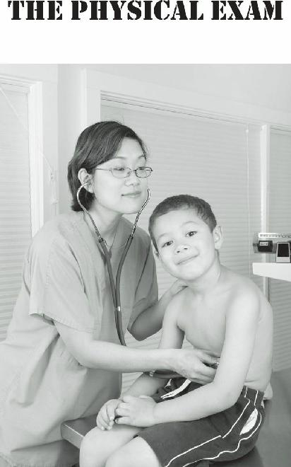

1 Cold pack/Hot pack
4” Ace wrap
1 6” Israeli bandage or other compression bandage
2 g Celox or Quikclot hemostatic
1 agent
1 Tourniquet
2 Eye pads
Pack (2 sheets) steri-strips
1 Nail scissors
1 Straight hemostat clamp 5”
1 2-0 Nylon suture
1 Super glue or Medical glue packet
1 Tweezers
1 LED penlight
1 Stainless steel bandage scissors 7.25”
20 1” x 3” Adhesive bandages
10 2” x 3” Adhesive bandages
2 Sterile ABD dressings 5” x 9”
5 Pairs Large Nitrile Gloves
20 Non-sterile 4” x 4” gauzes
10 Sterile 4” x 4” gauze
5 Non-Stick sterile dressing 3” x 4”
1 Roller gauze sterile dressing
1 Mylar solar blanket
1 Cloth Medical Tape 1” x 10 yds.
1 Duct tape 2” x 5 yds.
1 Triangular Bandage with safety pins
1 Tube of triple antibiotic ointment
Alcohol wipes
10 Povidone-iodine (Betadine) wipes
6 BZK anti-microbial wipes
2 Packets burn gel
6 Sting Relief Towelettes
1 Hand sanitizer
For all of the following, quantities will be dependent on the number of people you are medical responsible for.
Nuclear Family Kit
First aid reference book
Antibacterial Soap/Hand Sanitizers
Antiseptic/Alcohol Wipes
Gauze pads-(4” x 4” – sterile and non-sterile)
Gauze rolls-(Kerlix, etc.)
Non-Stick pads (Telfa brand)
Triangular bandages or bandannas
Safety Pins (large)
Israeli Battle Dressings or other Compression bandage
Adhesive Band-Aids (various sizes/shapes)
Large absorbent pads (ABD or other brand)
Medical Tape – (Elastoplast, Silk, Paper varieties), 1 inch, 2 inch
Duct Tape
Tourniquet
Moleskin or Spenco Second Skin Blister kit
Cold Packs/Heat Packs (reusable if possible)
Cotton Eye Pads, Patches
Cotton Swabs (Q-tips), Cotton Balls
Disposable Nitrile Gloves (hypoallergenic)
Face Masks (surgical and N95)
Tongue Depressors
Bandage Scissors (all metal is best)
Tweezers
Magnifying Glass
Headlamp or Penlight
Kelly Clamp (straight and curved)
Needle Holder
2-0, 4-0 Nylon Sutures
Scalpel or field knife
Styptic pencil (stops bleeding from superficial cuts)
Hemostatic Agents (Celox or Quikclot powder)
Saline Solution (liter bottle or smaller)
Steri-Strips/butterfly closures - thin and thick sizes
Survival Sheet/Solar Blanket
Thermometer (rectal or ear)
Antiseptic Solutions (Betadine, Hibiclens, etc.)
3% Hydrogen Peroxide
Benzalkonium Chloride wipes
Rubbing Alcohol
Witch Hazel
Antibiotic Ointment
Sunblock
Lip balms
Insect Repellant
1% Hydrocortisone Cream
2.5% Lidocaine cream (local anesthetic)
Acetaminophen/Ibuprofen/Aspirin
Benadryl (Diphenhydramine)/Claritin (Loratadine)
Imodium (Loperamide)
Pepto-Bismol (Bismuth Subsalicylate)
Rid shampoo (for lice)
Oral Rehydration Packs (or make it from scratch)
Water Purification Filter or Tablets
Gold Bond foot powder
Silvadene Cream (burns)
Oral Antibiotics (discussed later)
(or natural equivalents of all the above)
Birth Control Accessories (condoms, birth control pills, cervical caps, etc.)
Herbal Teas, Tinctures, Salves, and Essential Oils
Neti pot (use only with sterile solutions)
Dental Tray:
Cotton pellets and rolls
Dental mirror Dental pick, toothpicks
Dental floss
Clove bud oil (anesthetic for toothache)
Zinc Oxide (make a paste with oil of cloves and you get temporary dental cement), or…
Commercial dental kits (Den-Temp, Cavit)
Hank’s Solution (used to preserve viability in knockedout teeth)
4-0 Chromic suture
Needle holder
Actcel oral hemostatic agent (stops dental bleeding)
Extraction equipment (forceps and elevators)
Gloves, masks, and eye protection
The “Medic Bag at Away Camp” List
(medical supplies for an expedition)
All of the above in larger quantities, plus: Medical reference book(s)
Combat Dressings (Israeli bandages aka The Emergency
Bandage)
“Bloodstopper” dressing (inexpensive multipurpose dressing)
Tourniquet
Quik-Clot or Celox dressings (these are impregnated with substances that help stop bleeding) or larger powder packs ExtraLarge gauze dressings
Neck Collar
Eye cups, eye wash
Ammonia inhalants
Head Lamp
Slings
Splints
Irrigation Syringes (60-100 ml is good)
Needle Syringes (various sizes-20 gauge, 6 ml is common)
Surgical scissors (Mayo or Metzenbaum)
Needle holders and clamps, (enough to do basic minor surgery)
Scalpel and disposable blades (lots)
Emergency Obstetric Kit (comes as a pack)
Vicryl or Silk 0, 2-0, 3-0, 4-0, 5-0 suture material (very fine nylon fishing line will work if necessary)
Suture removal tray Fels-Naptha/Zanfel Soap (poison ivy, oak and sumac)
Saline solution-for irrigation of open wounds (sterilized water will also be acceptable for this purpose)
Cidex solution-for cleaning instruments
1% or 2% (Lidocaine) (local anesthetic in injectable form-prescription medication)
More varied supply of antibiotics (prescription)
Zofran (for nausea and vomiting-prescription)
Tramadol (stronger pain medicine-prescription) Oral
Rehydration powder (this can be made using home ingredients as well)
Epinephrine (Epi-pen, prescription injection for severe allergic reactions)
Rid lotion/Nix Shampoo (lice/scabies treatment)
Terconazole cream (antifungal)
Fluconazole 100 or 150mg tablets (prescription antifungal)
Wart removal cream/ointment/solution
Hemorrhoid cream/ointment
Tincture of Benzoin (“glue” for bandages)
The Community Clinic Supply List
(long-term care center)
All of the above in larger quantities, plus: Extensive medical library
Treatment Table
Plaster of Paris cast kits (to make casts for fractures)
(4in/6in)
Naso-oropharyngeal airway tubes (to keep airways open)
Nasal airways (keeps airways open)
Resuscitation facemask with one-way valve
Resuscitation bag (Ambu-bag)
Endotracheal tube/Laryngoscope (allows you to breathe for patient)
Portable Defibrillator (expensive)
Blood Pressure cuff (sphygmomanometer)
Stethoscopes
CPR Shield
Otoscope and Ophthalmoscope – (instruments to look into ears and eyes)
Urine test strips
Pregnancy test kits
Sterile Drapes (lots)
Air splints (arm/long-leg/short-leg)
SAM splints
Scrub Suits
IV equipment, such as:
Normal Saline solution
Dextrose and 50% Normal Saline IV solution
IV tubing sets - maxi-sets + standard sets
Blood collection bags + filter transfusion sets
Syringes 2/5/10/20 mL
Needles 20/22/24 gauge
IV kits 16/20/24 gauge
Paper tape (1/2 in/1in) for IV lines
IV stands (to hang fluid bottles)
Saline Solution for irrigation (can be made at home as well)
Foldable stretchers
Paracord (various uses)
Triage tags (for mass casualty incidents)
Surgery Tray items (extremely ambitious): Sterile
Towels
Sterile Gloves
Mayo scissors
Metzenbaum scissors
Small and medium needle holders
Bulb syringes (for irrigating wounds during procedures)
Assorted clamps (curved and straight, small and large)
Scalpel handle and blades (sizes 10, 11, 15) or disposable scalpels
Emergency Obstetric Kit (includes cord clamps, bulb suction, etc.)
Obstetric forceps (for difficult deliveries)
Uterine Curettes (for miscarriages, various sizes),
Uterine “Sound” (checks depth of uterine canal)
Uterine Dilators (to open cervix; allows removal of dead tissue)
Bone saw (for amputations)
Sutures, such as:
Vicryl; 0, 2-0, 4-0 (absorbable)
Chromic 0, 2-0 (absorbable)
Silk, Nylon or Prolene 0, 2-0, 4-0(non-absorbable)
Surgical staplers and staple removers
Chest decompression kits and drains – various sizes for collapsed lungs
Penrose drains (to allow blood and pus to drain from wounds)
Foley Catheters – Sizes 18, 20 for urinary blockage
Urine Bags
Nasogastric tubes (to pump a stomach)
Pressure Cooker (to sterilize instruments, etc.)
Additional Prescription Medications
Medrol dose packs, oral steroids
Salbutamol inhalers for asthma/severe allergic reactions
Antibiotic/anesthetic eye and ear drops
Oral Contraceptive Pills
Metronidazole, oral antibiotic and anti-protozoal
Amoxicillin, oral antibiotic
Cephalexin, oral antibiotic
Ciprofloxacin, oral antibiotic
Doxycycline, oral antibiotic
Clindamycin, oral antibiotic
Trimethoprin/Sulfamethoxazole, oral antibiotic
Ceftriaxone, IV antibiotic
Diazepam IV sedative to treat seizures
Diazepam in oral form, sedative
Alprazolam, oral anti-anxiety agent
Oxytocin (Pitocin) IV for post-delivery hemorrhage
Percocet, (oxycodone with paracetamol/acetaminophen), strong oral pain medicine
Morphine Sulfate or Demerol, strong injectable analgesic
I’m sure there is something that I might have missed, but the important thing is to accumulate supplies and equipment that you will feel competent using in the event of an illness or an injury. Some of the above supplies, such as stretchers and tourniquets, can be improvised using common household items.
It should be noted that many of the advanced items are probably useful only in the hands of an experienced surgeon, and could be very dangerous otherwise. Also, some of the supplies would be more successful in their purpose with an intact power grid. These items just represent a wish list of what I would want if I were taking care of an entire community.
You should not feel that the more advanced supply lists are your responsibility to accumulate alone. Your entire group should contribute to stockpiling medical stores, under the medic’s coordination. The same goes for all the medical skills that I’ve listed. To learn everything would be a lifetime of study; truthfully, more than even most formally-trained physicians can accomplish. Concentrate on the items that you are most likely to use regularly and be grateful of assistance from others in your group.

There are many issues that are best handled with the support of the latest technology and modern equipment and facilities. Sure enough, I’ve just spent the last chapter telling you to stock up on all sorts of high-tech items (even defibrillators!) and, indeed, many of these things are indispensable when it comes to dealing with certain medical conditions.
Unfortunately, you probably will not have the resources needed to stockpile a massive medical arsenal.
Even if you are able to do so, there are concerns. Your supplies will last only a certain amount of time.
Depending on the number of people you are medically responsible for, you can expect to be shocked at the rapidity with which precious medications and other items are used up. Tough decisions may have to be made when you’re down to that last box of gauze.
One solution is to grossly overstock on commonly used medical supplies, but this, too, is costly and doesn’t really solve your problem; even large stockpiles will eventually dry up when dealing with the common injuries and illnesses you’ll encounter.
Therefore, you must devise a strategy that will allow you to provide medical care for the long run. You will need a way to produce substances that will have a medical benefit without having a pharmaceutical factory at your disposal.
Well, there is another option: The plants in your own backyard or nearby woods. You might ask yourself, “I thought I was reading a book by a medical doctor.
What’s all this plant stuff?”
To answer this, we have to look at the history of medicine. Physicians have occupied different niches in society over the ages, from priests during the time of the pharaohs, to slaves and barbers in imperial Rome and the dark ages, and artists during the Renaissance.
All of these ancient healers used different methods but there was one thing they had in common: They knew the use of natural products for medicinal purposes. If they needed more of a particular plant than occurred in their native environment, they cultivated it.
They learned to make teas, tinctures and salves containing these products and how best to use them to treat illness. If modern medical care is no longer available one day, we will have to take advantage of their experience.
A little more history: Salicin is a natural pain reliever found in the under bark of Willows, Poplar and Aspen trees. In the 19th century, we first developed a process to commercially produce Aspirin (Salicylic acid) from these trees commonly found in our environment. Today, most artificially produced drugs involve many different chemicals in their manufacture. To make Insulin or
Penicillin, for example, so many chemicals are used that it would be impossible to reproduce the process in any type of collapse scenario. Do we even know what effect all of these ingredients have on our health? Despite this, we have gone so far in our ability to synthesize medications that we use them far too often in our treatment of patients.
Even organized medicine is realizing that we are too fast and loose in our utilization of pharmaceuticals.
Medical journals now call for physicians to focus on prevention instead of reflexively reaching for the prescription pad. Additionally, doctors are now being asked to prescribe only one drug at a time, due to the interactions that multiple medications have with each other. There’s a new skepticism regarding the conventional medical wisdom that might just be good for your health.
Having said this, not all pharmaceuticals are bad.
Indeed, some of them can save your life. Natural remedies, however, should be integrated into the medical toolbox of anyone willing to take responsibility for the well-being of others. Why not use all the tools that are available to you? At one point or another, the medicinal herbs and plants you grow in your garden may be all you have.
Natural substances can be used in “home remedies”
via several methods, including:
Teas: A hot drink made by infusing the dried, crushed leaves of a plant in boiling water.
Tinctures: Plant extracts made by soaking herbs in a liquid (such as water, grain alcohol, or vinegar) for a specified length of time, then straining and discarding the plant material. (also known as a “decoction”).
Essential Oils: Liquids comprised of highly concentrated aromatic mixtures of natural compounds obtained from plants. These are typically made by a process called “distillation”; most have long shelf lives.
Salves: Highly viscous or semisolid substances used on the skin (also known as an ointment, unguent, or balm).
Some of these products may also be ingested directly or diluted in solutions. A major benefit of home remedies is that they usually have fewer side effects than commercially produced drugs.
It is the obligation of the group medic to obtain a working knowledge of how to use and, yes, grow these plants. Consider learning the process of distillation to obtain concentrated versions for stronger effect. A number of reference books are available on the subject of natural remedies, and are listed in the appendix of this book.
Another alternative therapy thought by some to boost immune systems and treat illness is colloidal silver.
Colloidal silver products are made of tiny silver particles, silver ions or silver combined with protein, all suspended in a liquid — the same type of precious metal used in jewelry and other consumer goods. Silver compounds were used in the past to treat infection before the development of antibiotics.
Recently, laboratory studies at the department of
Biochemistry at Jiaxing College, China, have shown that
“silver-containing alginate fibers” provide a sustained release of silver ions when in contact with samples of wound drainage, and are “highly effective against bacteria”.
Colloidal silver products are usually marketed as dietary supplements that are taken by mouth. Colloidal silver products also come in forms that can be applied to the skin, where they are thought to improve healing by preventing infection. Silver use is only rarely associated with ill effects. Continuous use of silver, especially internally, may result in a condition known as Argyria.
This rare condition causes your skin to turn blue; this is mostly a cosmetic concern.
Ionic silver
(Ag+)
and silver particles in concentration has been shown to have an antimicrobial effect in certain laboratory studies. Physicians use wound dressings containing silver sulfadiazine
(Silvadene) to help prevent infection. Wound dressings containing silver are being used more and more often due to the increase in bacterial resistance to antibiotics.
A study under the aegis of the Hull York Medical School found that a dressing containing silver was “a highly effective and reliable barrier to the spread of MRSA into the wider hospital.” As a topical agent, Silvadene has been used on burn injuries for many years.
Less evidence is available from traditional medical sources regarding ionic silver solutions for internal use.
Silver ions are like members of the lonely hearts club;
they are a positively charged particle desperately looking to bond with another, negatively charged, ion. Once inside our body, they have a willing partner in the form of the Chloride from the salt in our cells. Once bonded as Silver Chloride, the compound is essentially inert. As such, it is uncertain how much benefit that internal use of silver will give you.
Despite this, there are many prominent naturopaths who strongly support its use. Home ionic silver generators are available for sale at a multitude of online sites.
Silver proteins bind organic materials to silver, so they are a different product than ionic silver. Unless suspended in a gelatin base, they have a tendency to drop to the bottom of the bottle (this is called
“precipitation”) and lose their antimicrobial effect. The larger the Silver particle, the more likely this will occur.
In rare circumstances, the presence of organic matter in the compound could lead to contamination.
It is important to understand that colloidal effectiveness is determined by particle surface area.
Large silver particles tend to precipitate, so smaller is better. Since the smallest silver particles do not require a protein to be suspended in the solution, more surface area will be available for antimicrobial effects. If you pursue this option, seek out products that will produce the smallest silver particles in their solutions.
I have to mention that the FDA has banned colloidal silver sellers from claiming any therapeutic or preventive value. As a result, the product is a dietary supplement by status, and cannot be marketed as preventing or treating any illness. More evidence is warranted before silver becomes a standard part of the medical arsenal.

As a medical doctor/registered nurse practitioner team, we received conventional medical training at university hospitals while getting our degrees. Since that time, however, we have explored various alternative methods of healing; this is not to replace our education, but as a supplement and as an additional tool in the medical woodshed.
Nature may, one day, be our pharmacy. The knowledge of herbal remedies had been passed down generation after generation. In a situation where regular medications are no longer produced, it is imperative to learn the medicinal benefits of plants that you can grow in your own garden.
One class of alternative remedies that are commonly used is Essential Oils. These substances are called
“essential” because they capture the “essence” of the plant. Unlike cooking oils, such as olive or corn, these oils are less fixed and more volatile. That means that they tend to evaporate easily, unlike the “fixed” oils, which don’t evaporate even in high temperatures. As such, essential oils are popular in aromatherapy.
Essential oils are distilled from whole plant material, not a single ingredient; therefore, every oil has multiple uses.
Although you might not realize it, you’ve been using essential oils all your life. You’ve no doubt used them in soaps, furniture polishes, perfumes and ointments.
Previous generations of conventional physicians commonly included them in their medical bags. Indeed, many standard medical texts of the past were, essentially, treatises on how to use these products.
Although it only takes a few leaves of peppermint to make a tea, it takes 5 pounds of leaves to make 1 ounce of essential oil. One source states that it takes an entire acre of peppermint to produce just 12 pounds. The same source says that 12,000 rose blossoms are required to produce a tablespoon of rose oil! These concentrated versions are the ones you see marketed in small, dark bottles. As such, they should be used sparingly. A reference book or two about essential oils would be a great addition to your medical library; see the medical reference section in the back of this book.
You might be surprised to learn that the Food and
Drug Administration only requires 10% essential oil in the bottle to be considered “Pure Essential Oil”. Beware of claims of FDA certification; the FDA has no certification or approval process for these products.
Essential oils are produced by plants to serve as either an attractant to pollinator insects (hence their strong fragrance) or as a repellant against invading organisms, from bacteria to animal predators. These substances usually contain multiple chemical compounds, making each plant’s essential oil unique.
Oils may be produced by leaves, bark, flowers, resin, fruit or roots. For example, Lemon oil comes from the peel, Lavender oil from flowers, and Cinnamon oil from bark.
Some plants are sources of more than one essential oil, dependent on the part processed. Some plant materials produce a great deal of oil; others produce very little. The strength or quality of the oil is dependent on multiple factors, including soil conditions, time of year, sub-species of plant, and even the time of day the plant is harvested.
The manufacture of essential oils, known as
“extraction”, can be achieved by various methods:
Distillation Method: Using a “still” like old-time moonshiners, water is boiled through an amount of plant material to produce a steam that travels through cooled coils. This steam condenses into a “mixture” of oil and water
(which doesn’t really mix) from which the oil can be extracted.
Pressing Method: The oils of citrus fruit can be isolated by a technique which involves putting the peels through a “press”. This works best only with the oiliest of plant materials, such as orange skins.
Maceration Method: a fixed oil (sometimes called a “carrier” oil) or lard may be combined with the plant part and exposed to the sun over time, causing the fixed oil to become infused with the plant “essence”. Oftentimes, a heat source is used to move the process along. The plant material may be added several times during the process to manufacture a stronger oil. This is the method by which you obtain products such as “garlic-infused olive oil”. A similar process using flowers is referred to as
“Enfleurage”.
Solvent Method: Alcohol and other solvents may be used on some plant parts, usually flowers, to release the essential oil in a multistep process.
As each essential oil has different chemical compounds in it, it stands to reason that the medicinal benefits of each are also different. As such, an entire alternative medical discipline has developed to find the appropriate oil for the condition that needs treatment. The method of administration may differ, as well. Common methods are:
1. Inhalation Therapy: This method is also known as “aromatherapy”. Add a few drops of the essential oil in a bowl of steaming water
(distilled or sterilized), and inhale. This method is most effective when placing a towel over your head to catch the vapors. Many people will place essential oils in potpourri or use a
“diffuser” to spread the aroma throughout the room; this technique probably dilutes any medicinal effects, however.
2. Topical Application: The skin is an amazing absorbent surface, and using essential oils by direct application is a popular method of administration. The oil may be used as part of a massage, or directly placed on the skin to achieve a therapeutic effect on a rash or muscle. Before considering using an essential oil in this manner, always test for allergic reactions beforehand. Even though the chemical compounds in the oil are natural, that doesn’t mean that they couldn’t have an adverse effect on you (case in point: poison ivy).
A simple test involves placing a couple of drops on the inside of your forearm with a cotton applicator. Within 12-24 hours, you’ll notice a rash developing if you’re allergic.
Mixing some of the essential oil with a fixed or
“carrier” oil such as olive oil before use is a safer option for topical use. Another concern, mostly with topically-applied citrus oils, is
“phototoxicity” (an exaggerated burn response to sun exposure).
I have some reservations about whether applying an essential oil on the skin over a deep organ, such as the pancreas, will really have any specific effect on that organ. It is much more likely to work, however, on the skin itself or underlying muscle tissue.
3. Ingestion: Direct ingestion is unwise for many essential oils, and this method should be used with caution. Most internal uses of an essential oil should be of a very small amount diluted in at least a tablespoon of a fixed oil such as olive oil. Professional guidance is imperative when considering this method. You can always consider a tea made with the herb as an alternative. This is a safer mode of internal use, although the effect may not be as strong.
Essential oils have been used as medical treatment for a very long time, but it’s difficult to provide definitive evidence of their effectiveness for several reasons.
Essential oils are difficult to standardize, due to variance in the quality of the product based on soil conditions, time of year, and other factors that we mentioned above.
An essential oil of Eucalyptus, for example, may be obtained from Eucalyptus Globulus or Eucalyptus
Radiata and have differing properties as a result. These factors combine to make scientific study problematic.
In most university experiments, a major effort is made to be certain that the substance tested caused the results obtained. As essential oils have a number of different chemicals and are often marketed as blends, which ingredient was the cause of the effect? If the oil is applied with massage, was the effect related to the oil itself or the therapeutic benefit of the physical therapy?
The majority of studies on essential oils have been conducted by the cosmetics and food industries; some have been conducted by individuals or small companies.
Standard studies for medicinal benefit are usually performed by the pharmaceutical industry, but they generally have little interest in herbal products. This is because they have few options in patenting these products.
Therefore, serious funding is hard to find because of the limited profit potential. Despite this, essential oils have various reported beneficial effects, mainly based on their historical use on many thousands of patients by alternative healers. Although there are many essential oils, a number of them are considered mainstays of any herbal medicine cabinet. Here are just some:
Lavender Oil: An analgesic (pain reliever), antiseptic, and immune stimulant. It is thought to be good for skin care and to promote healing, especially in burns, bruises, scrapes, acne, rashes and bug bites. Lavender has a calming effect, and is used for insomnia, stress and depression. It has been reported effective as a decongestant through steam inhalation. Lavender oil may have use as an antifungal agent, and may be used for
Athlete’s foot or other related conditions.
Eucalyptus Oil: An antiseptic, antiviral, and decongestant (also an excellent insect repellent),
Eucalyptus oil has a “cooling” effect on skin. It also aids with respiratory issues and is thought to boost the immune system. Consider its use for flus, colds, sore throats, coughs, sinusitis, bronchitis, and hay fever.
When exposure is expected, it has been reported to have a preventative effect. Eucalyptus may be used in massages, steam inhalation, and as a bath additive.
Although eucalyptus oil has been used in cough medicine, it is likely greatly diluted and should not be otherwise ingested in pure form.
Melaleuca (Tea Tree) Oil: Diluted in a carrier oil such as coconut, Tea Tree oil may be good for athlete’s foot, acne, skin wounds, and even insect bites. In the garden,
Tea Tree oil is a reasonable organic method of pest control. In inhalation therapy, it is reported to help relieve respiratory congestion. Studies have been performed which find it effective against both
Staphylococcus and fungal infections. Some even recommend a few drops in a pint of water for use as a vaginal douche to treat yeast. Tea Tree oil may be toxic if used in high concentrations, around sensitive areas like the eyes, or ingested.
Peppermint Oil: This oil is said to have various therapeutic effects:
antiseptic, antibacterial, decongestant, and anti-emetic
(stops vomiting).
Peppermint oil is applied directly to the abdomen when used for digestive disorders such as irritable bowel syndrome, heartburn, and abdominal cramping. Some herbalists prescribe Peppermint for headache; massage a drop or two to the temples as needed. For sudden abdominal conditions, achy muscles or painful joints, massage the diluted oil externally onto the affected area.
As mentioned previously, definitive proof of topical application effects on deep organs is difficult to find.
Lemon Oil: Used for many years as a surface disinfectant, it is often found in furniture cleaners. Many seem to think that this disinfecting action makes it good for sterilizing water, but there is no evidence that it is as effective as any of the standard methods of doing so, such as boiling. Lemon oil is thought to have a calming effect; some businesses claim to have better results from their employees when they use it as aromatherapy. Don’t apply this oil on the skin if you will be exposed to the sun that day, due to increased likelihood of burns.
Clove Oil: Although thought to have multiple uses as an antifungal, antiseptic, antiviral, analgesic, and sedative, Clove oil particularly shines as an anesthetic and antimicrobial. It is marketed as “Eugenol” to dentists throughout the world as a natural pain killer for toothaches. A toothpaste can be made by combining clove oil and baking soda; when mixed with zinc oxide powder, it makes an excellent temporary cement for lost fillings and loose crowns. Use Clove oil with caution, as it may have an irritant effect on the gums if too much is applied.
Arnica Oil: Arnica oil is used as a topical agent for muscle injuries and aches. Thought to be analgesic and anti-inflammatory, it is found in a number of sports ointments. As a personal aside, I have tested this oil on myself, and found it to be effective though not very long lasting. Frequent application would be needed for long term relief. Although some essential oils are excellent as aromatherapy, Arnica oil is toxic if inhaled.
Chamomile Oil: There are at least two versions of
Chamomile oil, Roman and German. Roman Chamomile is a watery oil, while German Chamomile seems more viscous. Both are used to treat skin conditions such as eczema as well as irritations due to allergies. Chamomile oil is thought to decrease gastrointestinal inflammation and irritation, and is thought have a calming effect as aromatherapy, especially in children.
Geranium Oil: Although variable in its effects based on the species of plant used, Geranium oil is reported to inhibit the production of sebum in the skin, and may be helpful in controlling acne. Some believe that it also may have hemostatic (blood-clotting) properties, and is often recommended for bleeding from small cuts and bruising.
When a small amount of oil is diluted in shampoo, it may be considered a treatment for head lice.
Helichrysum Oil: Thought to be a strong analgesic and anti-inflammatory, Helichrysum is used to treat arthritis, tendonitis, carpal tunnel syndrome, and fibromyalgia as part of massage therapy. It has also been offered as a treatment for chronic skin irritation.
Rosemary Oil: Represented as having multiple uses as an antibacterial, antifungal, and anti-parasitic,
Rosemary oil is proven to control spider mites in gardens. Use a few drops with water for a disinfectant mouthwash. Inhalation, either cold or steamed, may relieve congested or constricted respiration. Mixed with a carrier oil, it is used to treat tension headaches and muscle aches.
Clary Sage Oil: One of the various chemical constituents of Clary Sage has a composition similar to estrogen, and has been used to treat menstrual irregularities, premenstrual syndrome, and other hormonal issues. It is also believed to have a mild anticoagulant effect, and may have some use as a blood thinner. Clary Sage also is thought to have some sedative effect, and has been used as a calming agent.
Neem Oil: With over 150 chemical ingredients, the
Neem tree is referred as “the village pharmacy” in its native India. The majority of Ayurvedic alternative remedies have some form of Neem oil in them. Proven as a natural organic pesticide, we personally use Neem
Oil in our vegetable garden. Reported medicinal benefits are too numerous to list here and seem to cover just about every organ system. It should be noted, however, that it may be toxic when the oil is taken internally.
Wintergreen Oil: A source of natural salicylates,
Wintergreen oil is a proven anticoagulant and analgesic.
About 1 fluid ounce of Wintergreen Oil is the equivalent of 171 aspirin tablets if ingested, so use very small amounts. It may also have beneficial effects on intestinal spasms and might reduce elevated blood pressures.
Frankincense Oil: One of the earliest documented essential oils, evidence of its use goes back 5000 years to ancient Egypt. Catholics will recognize it as the incense used during religious ceremonies. Studies from
Johns Hopkins and Hebrew Universities state that
Frankincense relieves anxiety and depression in mice
(how, exactly, was this determined?). Direct application of the oil may have antibacterial and antifungal properties, and is thought to be helpful for wound healing. As a cold or steam inhalant, it is sometimes used for lung and nasal congestion.
Blue Tansy Oil: Helpful as a companion plant for organic pest control, Blue Tansy is sometimes planted along with potatoes and other vegetables. The oil has been used for years to treat intestinal worms and other parasites. One of its constituents, Camphor, is used in medicinal chest rubs and ointments. In the past, it has been used in certain dental procedures as an antibacterial.
Oregano Oil: An antiseptic, oregano oil has been used in the past as an antibacterial agent. It should be noted that Oregano oil is derived from a different species of the plant than the Oregano used in cooking. One of the minority of essential oils that are safe to ingest, it is thought to be helpful in calming stomach upset, and may help relieve sore throats. Its antibacterial action leads some to use the oil in topical applications on skin infections when diluted with a carrier oil. Oregano Oil may reduce the body’s ability to absorb iron, so consider an iron supplement if you use this regularly.
Thyme Oil: Reported to have significant antimicrobial action, diluted Thyme oil is used to cure skin infections, and may be helpful for ringworm and athlete’s foot.
Thyme is sometimes used to reduce intestinal cramps in massage therapy. As inhalation therapy, it may loosen congestion from upper respiratory infections.
“Thieves’ Oil”: Many essential oils are marketed as blends, such as “Thieves’ Oil”. This is a combination of clove, lemon, cinnamon bark, eucalyptus and rosemary essential oils. Touted to treat a broad variety of ailments, studies at Weber State University indicate a good success rate in killing airborne viruses and bacteria. Of course, the more elements in the mixture, the higher chance for adverse reactions, such as phototoxicity.
Some important caveats to the above list should be stated here. Most of the essential oils listed are unsafe to use in pregnancy, and may even cause miscarriage.
Also, allergic reactions to essential oils, especially on the skin, are not uncommon; use the allergy test I described earlier before starting regular topical applications.
Even though essential oils are natural substances, they may interact with medicines that you may regularly take or have adverse effects on chronic illness such as liver disease, epilepsy or high blood pressure. Thorough research is required to determine whether a particular essential oil is safe for you.
Having said that, essential oils are a viable option for many conditions. Anyone interested in maintaining their family’s well-being should regard them as just another weapon in the medical arsenal. Learn about them with an open mind, but maintain a healthy skepticism about
“cure-all” claims.
Planting your own medicinal garden is a prudent way to provide alternatives to modern medicine.
Until pharmaceuticals were produced in factories, communities and homesteads had to grow their own
“medicine”. This common practice was a natural part of the landscape and provided needed remedies for many medical issues. Oftentimes, a community would have a person that served as an herbalist and supervised the cultivation and processing for proper administration.
Growing your own medicinal garden is both rewarding and beneficial; in times of trouble, you will likely have limited access to pharmaceuticals. The learning curve when gardening can be steep, so don’t delay planting those medicinal seeds until the situation is critical.
Select a well-drained, sunny area with healthy soil.
Although some herbs grow well in shade, most plants need at least 6-8 hours of full sun for proper growth and development. Potting is appropriate for medicinal plants that will need to be transported inside during a cold winter. Water should be provided on a regular basis to allow the soil to stay moist, but not muddy or waterlogged. A small amount of natural mulch is perfect for maintaining an even moisture level in very dry conditions.
Learn about permaculture if you are planting in the ground. This method has many benefits and will reduce your maintenance schedule. Use only organic pest and disease control. A soapy spray of 1 tablespoon of neem oil, 1 teaspoon of Dr. Bronner ’s lavender, tea tree or peppermint castile soap and, optional, a few drops of tea tree essential oil to 4-8 cups of water makes a great disease and natural pest control. Spray foliage in the late afternoon every 5-7 days or after a heavy rain.
The medicinal plants you select should match your climate as best as possible. However, with certain plants, you may be able to grow warmer climate plants by protecting them from the cold with greenhouses or using row covers. This will expand the range of medicinal plants you may choose to grow either in pots or around your homestead.
Here is a short list of medicinal plants you may consider growing, with the most common part of the plant used and some of the conditions it might help:
Aloe Vera (Aloe Vera)- the slimy gel from the leaf is used to heal and soothe rashes, burns, and cuts.
Angelica (Angelica archangelica)- rhizomes (similar to a root but actually an underground stem) are used to make a tinctures and infusions to treat menstrual cramps.
Arnica (Arnica montana)- flowers and rhizomes are utilized to produce very dilute concentrations of an ointment or salve. Used only externally on unbroken skin for bruises or joint/muscle pain.
Calendula (Calendula officinalis)- the flowers are used fresh or dried and made into teas, tinctures, creams and salves. Drinking a calendula tea or tincture may relieve menstrual cramps, intestinal cramps and decrease the severity of a viral infection. Rich in antioxidants, it can be applied externally as a cream, salve, infused oil or as a compress. Calendula reduces pain and heals minor burns, cuts, rashes, ringworm and athlete’s foot. Cool, weak tea compresses may heal an eye infection; apply to the affected eye three times daily.
Cayenne (Capsicum frutescens)- the pepper (fruit) is used dried and powdered, infused in oil, as a tincture or mixed in a salve or cream. Good externally for arthritic pain as a salve, cream or infused oil, and may be useful to stop mild to moderate bleeding in a wound if direct pressure is not working. Cayenne can be taken internally as a tincture or as a pinch of powder in a tea for to treat intestinal infections, sore throat pain or gas. Some consider it a broad spectrum antibacterial.
Chamomile, German (Matricaria recutita)- the flowers are used in teas, salves and creams. Internally taken, the tea is known to be relaxing and is used as an antispasmodic (relaxes muscle tension and cramps). It also helps with insomnia, calms an upset stomach, and may also reduce the inflammation of joints. Externally used, cooled tea compresses or eyewash may treat eye infections. Applied to painful rashes, itchy skin, or sore nipples, a poultice (a mass of warmed crushed flowers), cream or salve may relieve and heal skin conditions.
Comfrey (Symphytum officinale)- the leaves, aerial parts, and root are used in creams, salves, infused oils, ointments, poultices and tinctures. Use is limited to external use on unbroken skin only. Common uses for comfrey externally are to help heal broken bones, sprains, strains and bruises. Comfrey may help with acne and reduce scarring.
Echinachea (Echinacea purpurea, augustifolia or pallida)- the flowers and roots are used to produce tinctures, teas, capsules, and pills. It is known to be a strong antibacterial and antiviral due to its immune stimulating effects. Some use it to help reduce allergies, such as hay fever.
Elder (Sambucus nigra)- this tree produces two parts used medicinally: the fresh or dried flowering tops and the berries. A tea, tincture or syrup made of the flowering tops are good for coughs, colds, flu and reducing allergies. Cooking is needed to prevent poisoning from elderberries, which can be used for the same ailments as the flowering tops but are not considered as effective. Wine is commonly made from elderberries.
Witch Hazel (Hamamelis virginiana)- tincture of the bark is used as an astringent to reduce hemorrhoids, stop itching from insect stings.
Feverfew (Tanacetum parthenium)- the fresh or dried aerial parts (stems, leaves and flowers) are used to produce a tea, tincture, capsules or pills. Use the leaves to produce a tea or tincture for the treatment or prevention of migraine headaches and also to reduce fevers. This herb may also help with arthritic conditions.
Do not use in combination with blood-thinning medications.
Garlic (Allium sativum)- the fresh cloves are used
(crushed) to make a tea, tincture, syrup, or capsules.
Garlic may help lower blood pressure, reduce cholesterol, thin the blood to help protect against blood clots, and lower blood sugar levels. It has antibacterial and antiviral properties, which makes it effective for treating both digestive and respiratory infections. It can be applied externally to dress wounds for reduced infection rates. Use with caution if taking blood thinners or antihypertensive medications.
Ginger (Zingiber officinale)- the rhizomes are used to make a tea, essential oil, capsule or tincture. Ginger is excellent for use in digestive disorders. It can help relieve both morning sickness and motion sickness.
Some types of food poisoning may be treated effectively with ginger. Ginger may lower blood pressure. It increases sweating, which is beneficial to reduce a fever.
Ginkgo (Ginkgo biloba)- the leaves are the most commonly used part in Western medicine; the dehusked seed, however, is occasionally used in Chinese medicine.
The fresh or dried leaves are used to make a tea, tincture or fluid extract. It is typically utilized to help improve memory and circulation. Gingko also has anti-allergenic properties, which makes it helpful to relieve wheezing in asthmatics.
Ginseng, Siberian (Eleutherococcus seticosus)- the roots are used to make a tea, tincture or incorporated into capsules. It is used to reduce the effects of physical stress and mental stress. It stimulates the immune system to help the body fight viruses and bacterial infections.
Goldenseal (Hydrastis canadensis)- the rhizomes are used to produce a tincture, tea, powder or infusion. It is said to be a mild laxative; it also reduces heavy menstrual bleeding. A dilute infusion can be used as eyewash for infections, as a mouthwash for swollen or infected gums, or as an external treatment for psoriasis.
Goldenseal is not appropriate for use in pregnancy.
Lavender (Lavendula officinalis)- the fresh or dried flowers are used to produce a tea, tincture, infusion or essential oil. It enhances relaxation and calms nervous conditions, including muscle or intestinal cramps, and loosens tight airways in asthmatics. Applied externally, it is an antiseptic for open wounds and mild burns. It relieves itching and inflammation, and can be used to relieve bug bites and rashes.
Lemon Balm (Melissa officinalis)- the fresh or dried aerial parts are used to produce a juice, tea, tincture, infusion, lotion and salve/cream. It can reduce nervous conditions and cramping, and is useful for anxiety, intestinal cramps, and muscle aches. Lemon balm can relieve cold sores and reduce future outbreaks.
Licorice (Glycyrrhiza glabra)-the dried or fresh root is used to create a tea, fluid extract, tincture, dried juice stick or powder. It is a gentle laxative. It is considered to have anti-inflammatory effects. It helps with canker sores, upset stomach, and acid reflux. This same action also helps it reduce arthritic pain and inflamed joints. Do not take if anemic, have high blood pressure or during a pregnancy.
Peppermint (Mentha piperita)-the fresh or dried aerial parts are used to make a tea, tincture, lotion, capsules and essential oil. The tea or tincture is helpful for digestive problems and may reduce gas, cramps, and diarrhea. As a lotion or diluted essential oil, it helps relieve headaches and migraines when a small amount is applied to the temples in a gentle massage.
Rosemary (Rosmarinus officinalis)-the fresh or dried leaves are used to produce a tea, tincture or essential oil.
The tea or tincture can help reduce stress and relieve headaches. Applied as a diluted essential oil or lotion it may relieve sore muscles or joint pain. Do not take the essential oil internally.
Sage (Salvia officinalis)-the fresh or dried leaves are used to make a tea, tincture or fresh leaves are crushed and applied directly to the skin. The fresh crushed leaves are helpful to relieve stings and bug bite irritation. The tea is good to relieve a sore throat, canker sores or sore gums when used as a gargle. Drinking the tea can help reduce menopausal symptoms.
Skullcap (Scutellaria lateriflora)-the fresh or dried aerial parts are used to create an infusion, tincture or capsules. It is said to calm and relax nervous conditions, including insomnia and menstrual pain. The tincture may help relieve headaches.
Senna (Cassia senna or Senna alexandrina)-the fresh or dried pods are used commonly to make a tea. It is a laxative and over-the-counter preparations are available to treat constipation. Senna should be used only in dilute, small dosages. Do not take for more than 10 days.
St. John’s Wort (Hypericum perforatum)- the fresh or dried flowering tops are used to make a tea, tincture, cream or infused oil.. Most commonly said to be a relaxant and helpful to treat depression, PMS and menopausal symptoms. The infused oil is useful when applied externally to help with stimulating tissue repair on wounds and burns; it may also may reduce joint and muscle pains. This herb may cause sensitivity to sunlight.
Thyme (Thymus vulgaris)- the fresh or dried aerial parts including leaves are used to produce a tea, tincture, syrup and essential oil. A tea may be helpful for use in treating colds and flu. Syrup made from thyme is a traditional cough remedy. A tincture applied externally may help with vaginal fungal infections. Thyme has been used as a treatment for intestinal worms. Do not use the essential oil during pregnancy
Turmeric (Curcuma longa)-the fresh or dried rhizome is used in a tea, tincture, poultice or powder. It is said to have a strong anti-inflammatory action, and may help with asthma, arthritis and eczema. A beneficial effect on stomach and intestinal cramps is also attributed to this herb. Turmeric has blood thinning properties and should be avoided if taking anti-coagulants. Externally it is useful in treating fungal infections, psoriasis and other itchy rashes and could be utilized as a replacement for hydrocortisone if modern medicines are unavailable.
Turmeric may cause stomach upset or heartburn if taken regularly. It may cause sensitivity to sunlight if taken regularly.
Valerian (Valerian officinalis)- the roots and rhizome are used to produce a tea, tincture or powder..
Commonly used to reduce stress, induce relaxation and treat insomnia. It can help relax muscle tension, intestinal cramps and menstrual pain. Do not take with alcohol or if using sleep-inducing medications.
Yarrow (Achillea millefolium)-fresh or dried aerial parts are used to make a tea, tincture, essential oil or a poultice. Yarrow is used externally to heal wounds as a poultice. Traditionally mixed with other herbs in a tea, it may help with colds and flus. Some claim that it reduces menstrual bleeding. There are reports of allergic reactions to Yarrow by some, and it should not be used during pregnancy.
The same issues regarding proof of effectiveness and uncertainty of dosage that we related in the essential oil chapter are relevant for the herbs on this list. Perform your own research into these alternatives and come to your own conclusions. For useful books on herbalism and other medical subjects, go to the reference section at the end of this book.

By reading this book, you have made the decision to take responsibility for the medical well-being of your family in the aftermath of a disaster. Therefore, you will have to build a store of knowledge of how to evaluate a patient and make a diagnosis.
You will have to put your (gloved) hands on them and be able to look for physical signs of illness or check out a wound in a systematic manner. Sometimes the problem is obvious in seconds; other times, you will have to examine the entire body to determine the problem. During an exam, always communicate to your patient who you are, what you are doing and why.
Remain calm and be very careful about forcing them to move or perform an action that is beyond their capability.
The most basic information is obtained by checking the vital signs. This includes the following;
Pulse rate – this can be taken by using 2 fingers to press on the side of the neck or the inside of the wrist (by the base of the thumb).
A normal pulse rate at rest is 60-100 beats per minute. You may choose to feel the pulse for, say, 15 seconds and multiply the number you get by 4 to get beats per minute. A full minute would be more accurate, however. You will find that most people who are agitated from having suffered an injury will have a high pulse rate. This is called “tachycardia”.
Respiration rate – this is best evaluated for an entire minute to get an accurate reading. The normal adult rate at rest is 12-18 breaths per minute, somewhat more for children. Note any unusual aspects, such as wheezing or gurgling noises. A respiration rate over 20 per minute is a sign of a person in distress, and is known as
“tachypnea”.
Blood pressure – blood pressure is a measure of the work the heart has to do to pump blood throughout the body. You’re looking for a pressure less than 140/90 at rest. Blood pressure may be high after extreme physical exertion but goes back down after a short while. Of course, some people have high blood pressure as a medical condition. A very low blood pressure may be seen in a person who has hemorrhaged or is in shock. Instructions on how to take a blood pressure can be found in the chapter on high blood pressure, also called “hypertension”.
Mental status – You want to know that your patient is alert and, therefore, can respond to questions and commands. Ask your patient what happened. If they seem disoriented, ask simple questions like their name, where they are, or what year it is. Note whether the patient appears lethargic or agitated. Some patients may appear unconscious, but may respond to a spoken command. For example: “Hey! Open your eyes!” If no result, determine if they respond to a stimulus, such as gentle pressure on their breastbone. If they don’t, they are termed “unresponsive” and something very serious is going on.
Body Temperature - Take the person’s temperature to verify that they don’t have a fever. A normal temperature will range from
97.5 to 99.0 degrees Fahrenheit. A significant fever is defined as a temperature above 100.4 degrees Fahrenheit (38 degrees Celsius). Very low temperatures (less than 95 degrees
Fahrenheit (35 degrees Celsius) may indicate cold-related illness, also known as hypothermia. On the opposite hand is heat stroke (hyperthermia), where the temperature may rise above 105 degrees Fahrenheit (40.5 degrees Celsius).
Once you’ve taken the vital signs and determined that there is no obvious injury, perform a general exam from head to toe in an organized fashion. Touch the patient’s skin; is it hot or cold, moist or dry? Is there redness, or is the patient pale? Examine the head area and work your way down. Are there any bumps on their head, are they bleeding from the nose, mouth, or ears? Evaluate the eyes and see if they are reddened and if the pupils respond equally to light.
Have the patient open their mouth and check for redness, sores, or dental issues with a light source and a tongue depressor. Check the neck for evidence of injury and feel the back of the head and neck, especially the neck bones (vertebrae).
Take your stethoscope and listen to the chest. This is called “auscultation”. Do you hear the patient breathing as you place the instrument over different areas of each lung? Are there noises that shouldn’t be there? Practice listening on healthy people to get a good idea of what clear lungs should sound like. Abnormal sounds would include wheezing, gurgles, and crackles. I have included some references to videos that allow you to hear these sounds at the end of this book.
Listen to the heart and see if the heartbeat is regular or irregular in rhythm. Check along the ribs for rough areas that might signify a fracture. Check the armpits
(also known as the axilla) for masses. Perform a breast exam by moving your fingers in a circular motion over the breast tissue, starting from the periphery near the axilla and ending at the nipple.

Press on the abdomen with your open hand. This is referred to as “palpation”. Is there pain? Is the belly soft or is it rigid and swollen? Do you feel any masses? Use your stethoscope to listen to the gurgling of bowel sounds. Lack of bowel sounds may indicate lack of intestinal motility; excessive bowel sounds may be seen in some diarrheal disease. Place your open hand on the different quadrants of the abdomen and tap on your middle finger. This is called “percussion”. The abdomen will sound “hollow” normally, but dull where there might be a mass. Press down on the right side below the rib cage to determine if the liver is enlarged (you won’t feel it if it isn’t). An enlarged spleen will appear as a mass on the left side under the bottom of the rib cage.
Check along the patient’s spine for evidence of pain or injury. Pound lightly with a closed hand on each side of the back below the last rib; this is where the kidneys are, and injury or infection would cause this action to be very painful to the patient.
Check each extremity by feeling the muscle groups for pain or decreased range of motion. Make sure that there is good circulation by checking the color on the tips of the fingers and toes. Poor circulation will make these areas white or blue in color. Check for sensation by lightly tapping with a safety pin. Place your hands on their thighs and ask them to lift up, to check for normal strength and tone. Ask them to grasp your fingers with each hand; then, try to pull your hand away. If you can’t, that’s good. The strength on each side should be about equal.

Human beings are what we call “bilaterally symmetrical”.
If you draw a line vertically down the length of their body, each side is essentially the same. This means that, if you are uncertain whether a limb is injured or deformed, you can compare it to the other side.
These are just some basics. Certainly, there’s a lot more to a physical exam than what you’ve just read, but practicing exams on others will give you experience. As time goes by, you’ll get the feel of what is normal and what isn’t. Once you get the hang of it, your efforts will prepare you for making a diagnosis if we find ourselves without access to modern medical care.
The last section discussed performing a general physical exam. Most of these exams will be unhurried and routine, but, occasionally, you will have to make some quick decisions. For major trauma, it is important to take note of the “golden hour”. A victim’s chance of survival decreases significantly if not treated within 1 hour of the injury. It gets even worse with every 30 minutes that pass without care.
The responsibilities of a medic in times of trouble will usually be one-to-one; that is, the healthcare provider will be dealing with one ill or injured individual at a time. If you have dedicated yourself to medical preparedness, you will have accumulated significant stores of supplies and some knowledge. Therefore, your encounter with any one person should be, with any luck, within your expertise and resources. There may be a day, however, when you find yourself confronted with a scenario in which multiple people are injured. This is referred to as a Mass Casualty Incident (MCI).
A mass casualty incident is any event in which your medical resources are inadequate for the number and severity of injuries incurred. Mass Casualty Incidents
(we’ll call them “MCIs”) can be quite variable in their presentation. They might be:
Doomsday scenario events, such as nuclear weapon detonations
Terrorist acts, such as occurred on 9/11 or in
Oklahoma City
Consequences of a storm, such as a tornado or hurricane
Consequences of civil unrest
Mass transit mishap (train derailment, plane crash, etc.)
A car accident with, say, three people significantly injured (and only one ambulance)
Many others
The effective medical management of any of the above events requires rapid and accurate triage. Triage comes from the French word “to sort” (“Trier”) and is the process by which medical personnel (like you, survival medic) can rapidly assess and prioritize a number of injured individuals, thereby doing the most good for the most people. Note that I didn’t say: “Do the best possible care for EACH individual victim”.
Let’s assume that you are in a marketplace somewhere in the Middle East or perhaps in your survival village near the border with another (hostile)
group. You hear an explosion. You are the first one to arrive at the scene, and you are alone. There are twenty people on the ground, some moaning in pain. There were probably more, but only twenty are, for the most part, in one piece. The scene is horrific.
S.T.A.R.T.
As the first to respond to the scene, medic, you are
Incident Commander until someone with more medical expertise arrives on the scene. What do you do? Your initial actions may determine the outcome of the emergency response in this situation. This will involve what we refer to as the 5 S’s of evaluating a MCI scene:
Safety
Sizing up
Sending for help
Set-up of areas
START – Simple Triage And Rapid Treatment
1. Safety Assessment: In the Middle East, an insidious strategy on the part of terrorists is the use of primary and secondary bombs. The main bomb causes the most casualties, and the second bomb is timed to go off or is triggered just as the medical/security personnel arrive.
Many medical professionals wince when I talk about not approaching the injured in a hostile setting. Why am I suggesting that you do NOT immediately go to the nearest victim?
Because your primary goal as medic is your own self-preservation; keeping the medical personnel alive is likely to save more lives down the road. Therefore, you do your family and community a disservice by becoming the next casualty.
In the immediate aftermath of the Oklahoma
City bombing, various medical personnel rushed in to aid the many victims. One of them was a heroic 37 year old Licensed Practical